「チューイングキャンディー」のパッケージデザインです。
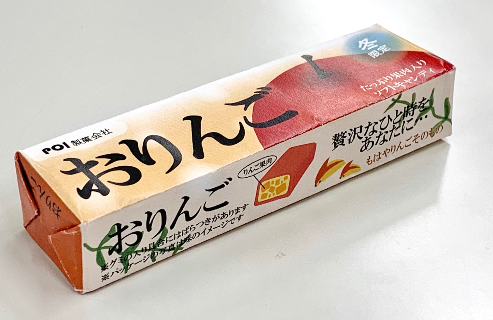 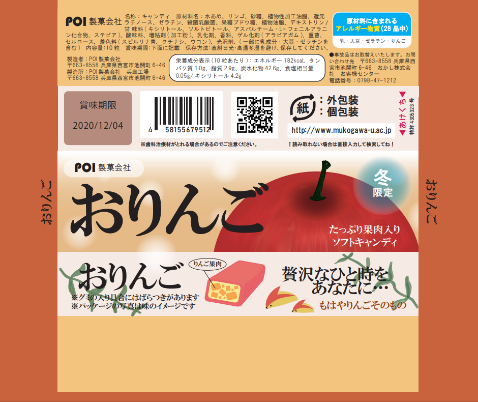旅行写真の展示会のフライヤーを制作しました。
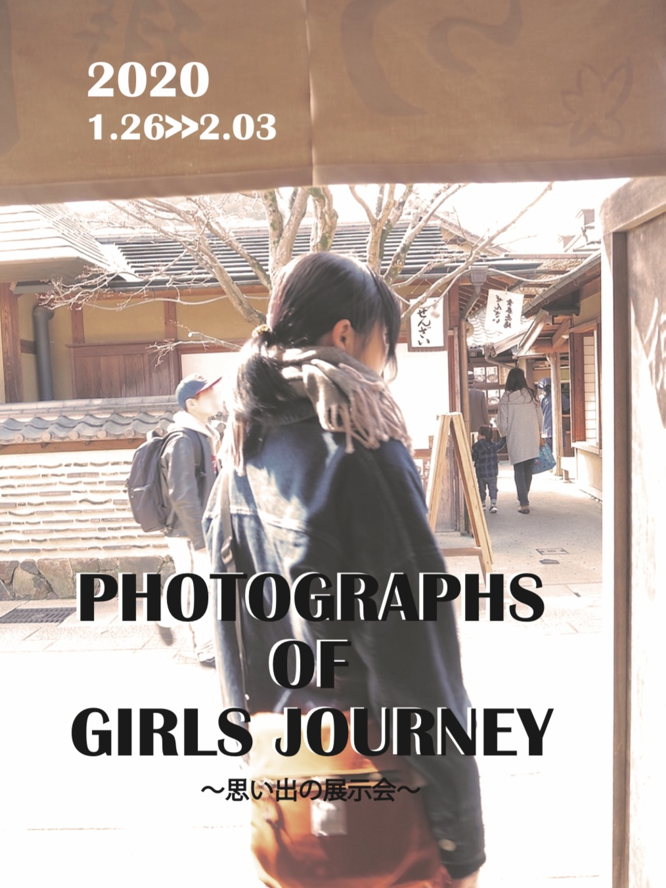 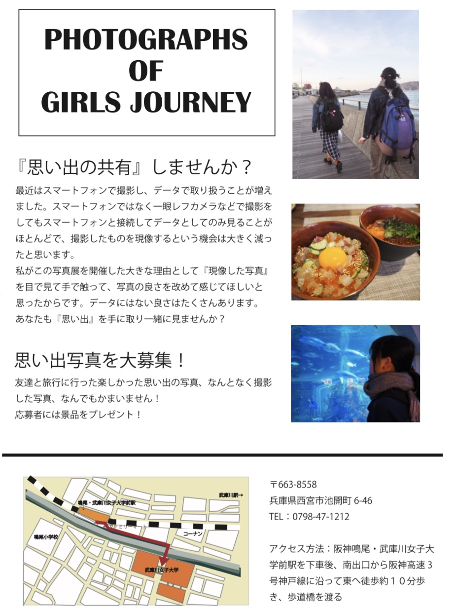自身の経歴や趣味、高校時代の活動について紹介するサイトを制作しました。
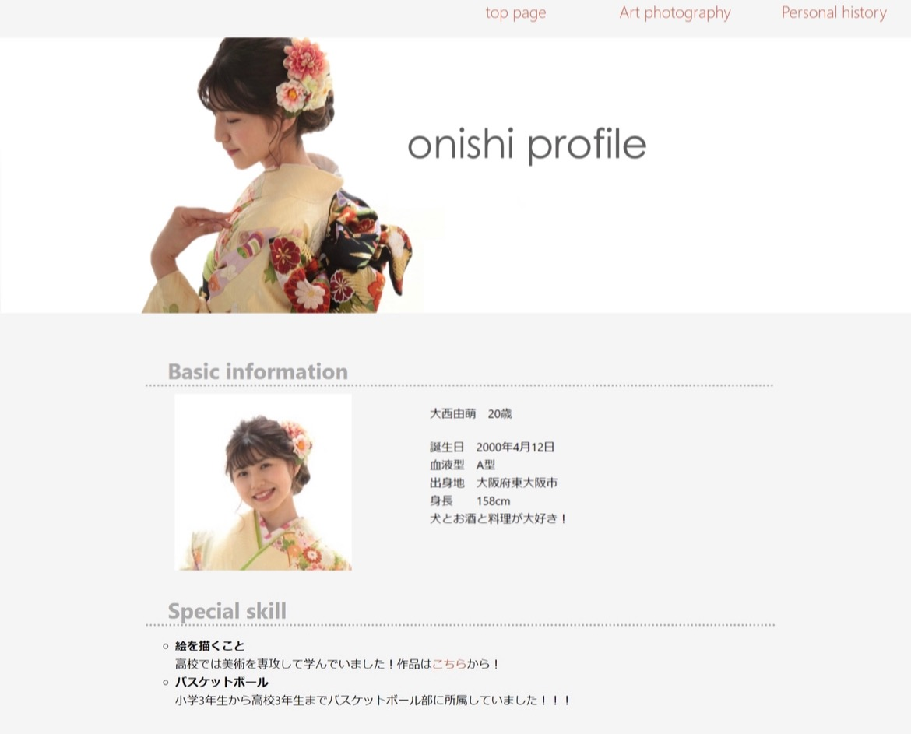いつ誰からどのくらいの値段のプレゼントを頂いたのかを記録するアプリです。
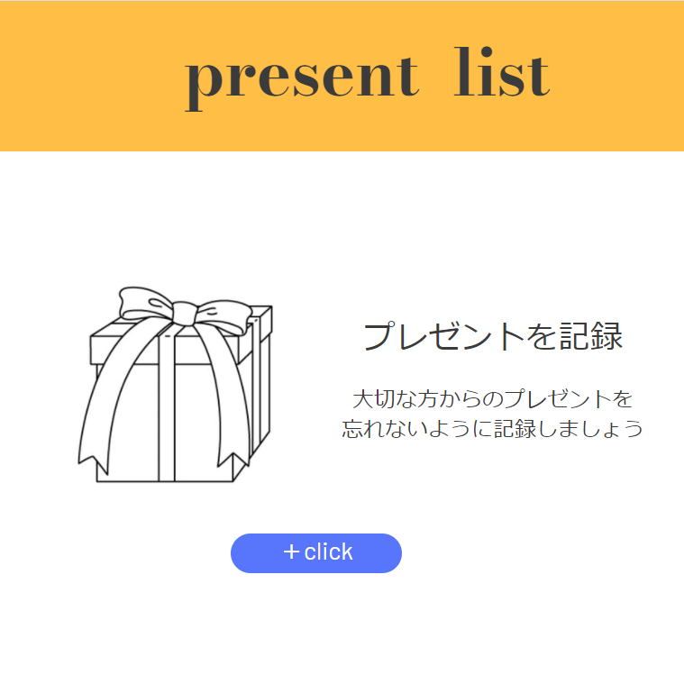ToDoリストに入れた予定はカレンダーに反映され、一目ですべきことが分かるアプリです。
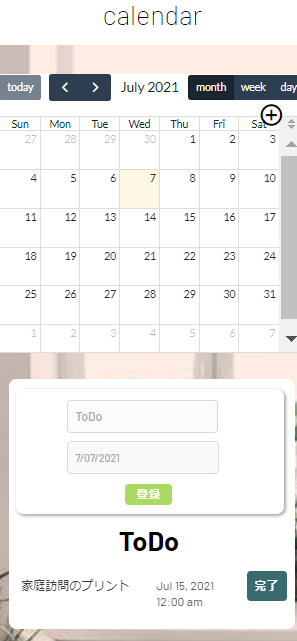 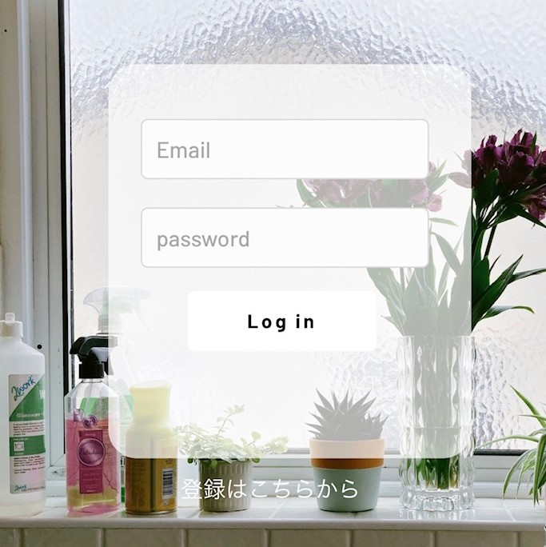海洋プラスチックごみについての啓発ポスターです。
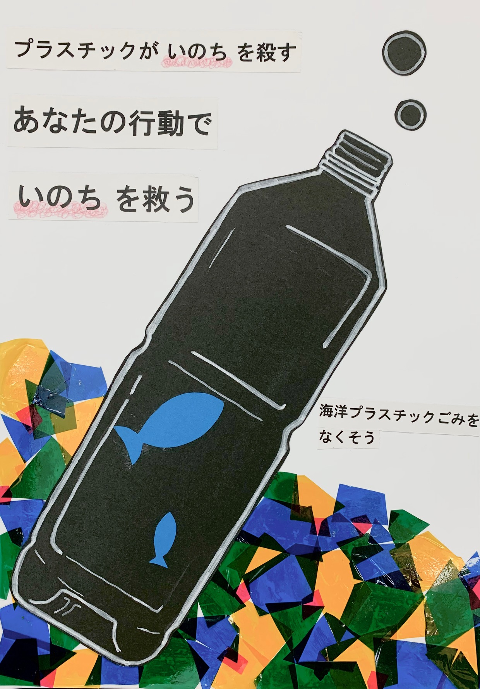 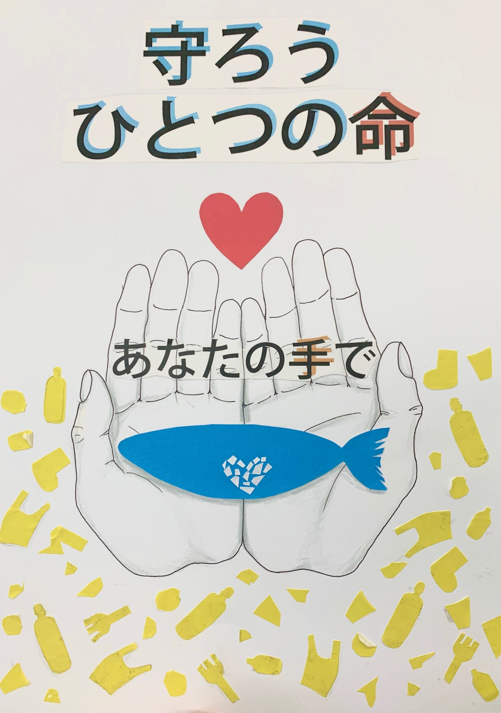2.5次元マスクを用いて2.5次元空間を演出しました。
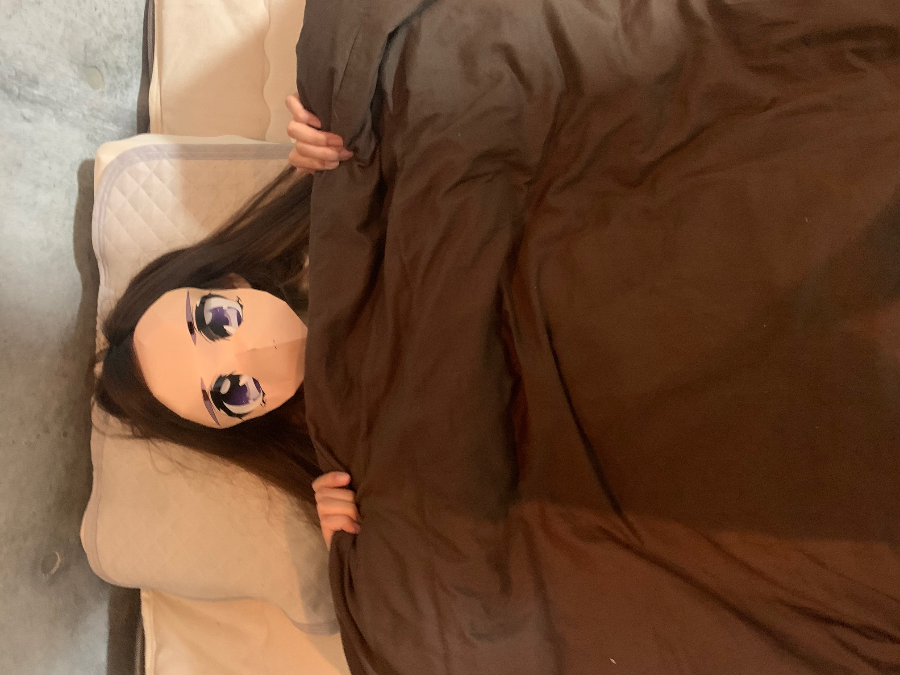Adobe Frescoを使用しました。
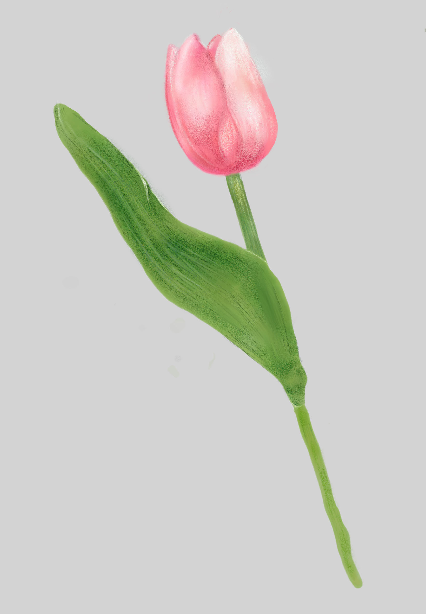 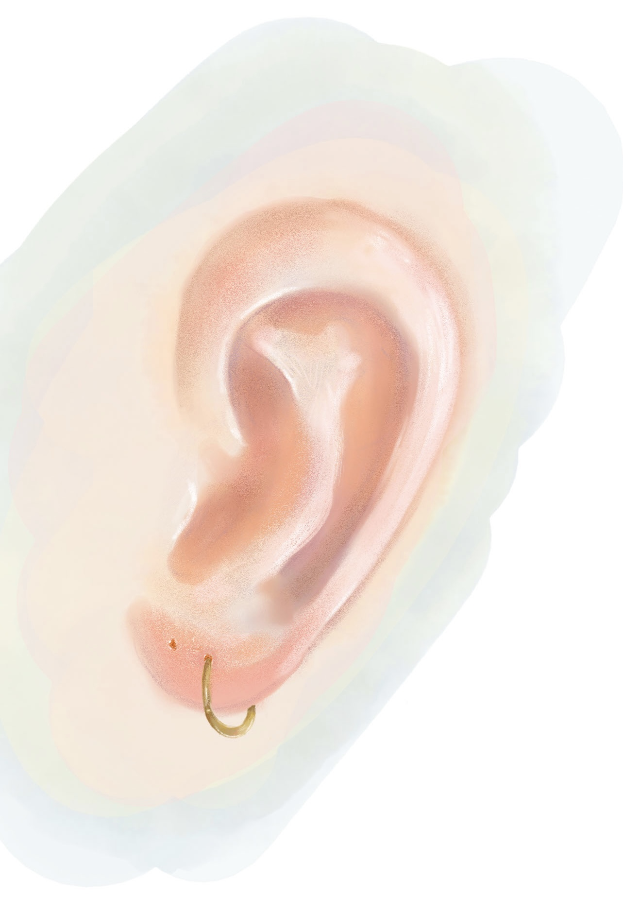